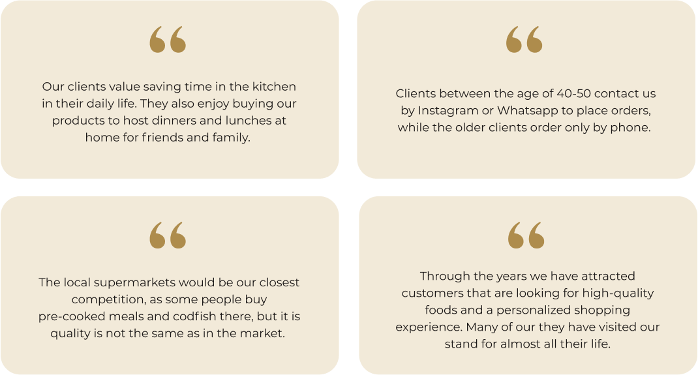
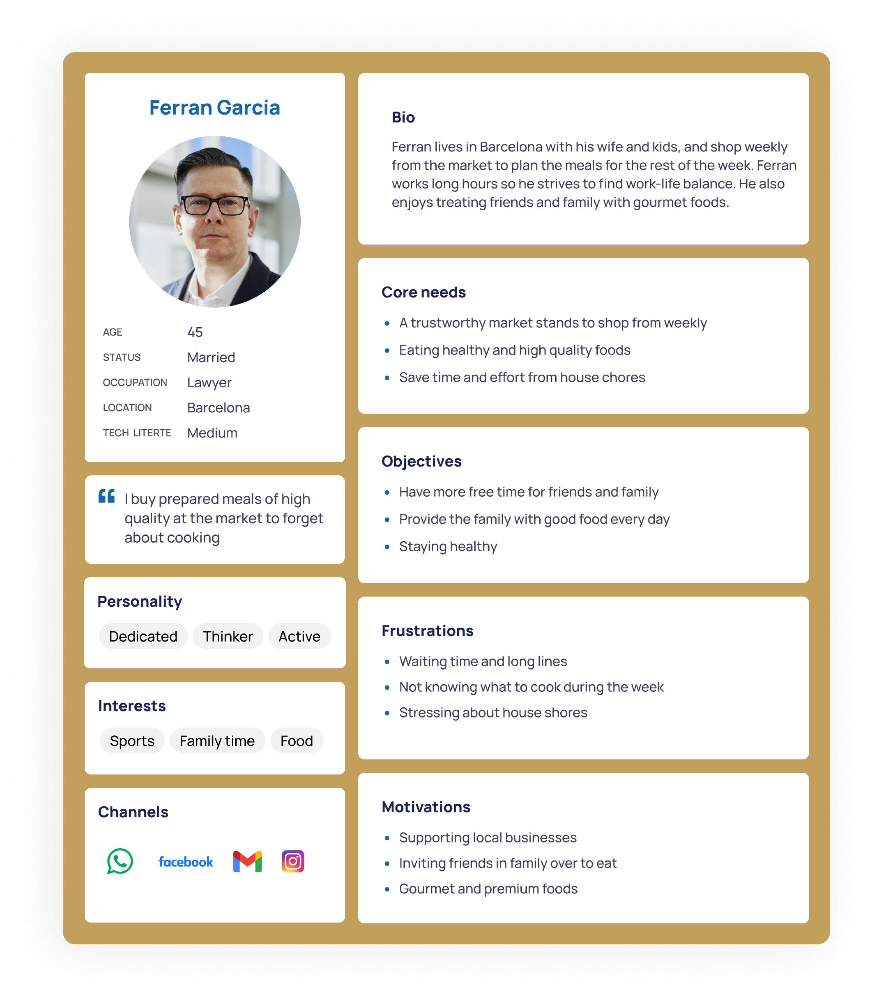
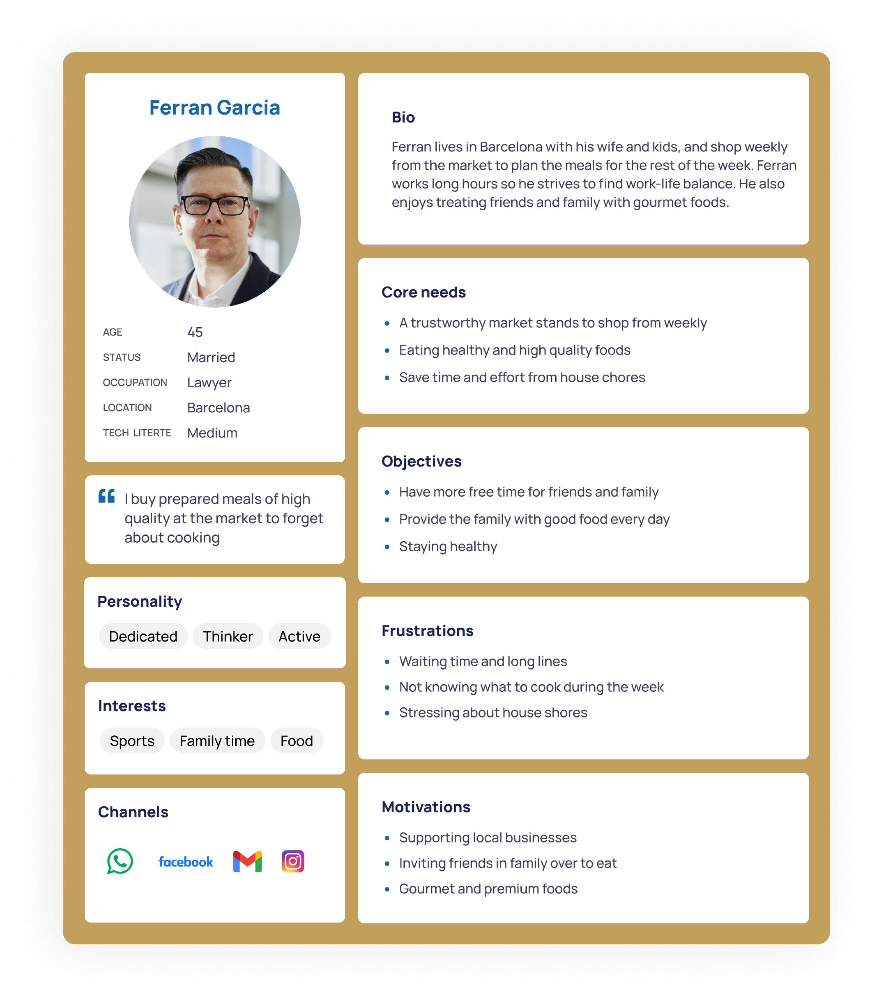
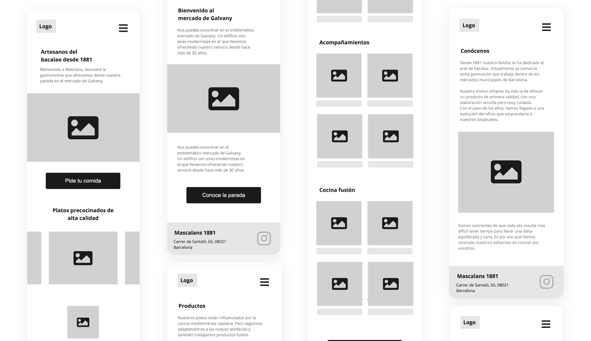
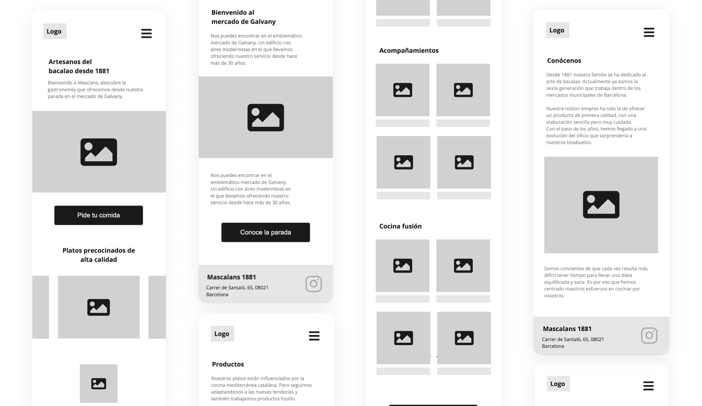

Masclans 1881
A UX/UI design, branding and CX research case study for the Barcelona based food company, Masclans 1881.
My role
UX/UI designer, graphic designer and CX researcher
Context
Masclans 1881 is a family-owned business of six generations in the food industry, based in Barcelona. From their market stand in the historical market Galvany, Masclans 1881 offers takeaway gourmet meals and prenium codfish from Iceland. Their products are mainly inspired by the local Catalan cuisine, but they also offer fusion food with influences from Japan and Scandinavia.
Problem definition
Masclans 1881 is a well-established company with loyal customers, but they were lacking a unified brand identity and an online presence. This is why the company needed help to create new brand guidelines and launch a website, as a strategy to give more visibility to the brand as a reference in their niche.
Objectives
- Present a unified brand identity that reflects the company's values and positioning.
- Have a website that is useful for the customers.
- Connect with new and existing customers online, to attract more traffic to the market stand.
Tools
- Miro
- Adobe Illustrator
- Figma
CX Research
Research objectives
- Understand the external and internal business situation
- Identify customer personas and their needs
Interview with Masclans 1881
In order to understand the company's needs, objectives and situation better, I conducted an interview with one of the co-owners. The objective of this dynamic was to kick-start the project by getting familiar with the food market industry and understanding the company's point of view. As Masclans 1881 is a company with six generations of experience in their niche it was very valuable to learn about their experience and insights for the research and design process.
SWOT
In order to analyze the strategic situation of the company, I created a SWOT matrix based on the interview with the company. The objective was to understand the relationship between Masclans 1881 and internal and external factors. This analysis was helpful in order to visualize and identify which strengths and weaknesses we needed to take into account when developing the website and the brand.
Observation & immersion
I useed observation and immersion as a reserach method to further understand the customer relationships, the consumer behaviours and the experience at the market as a whole.
Empathy Map
Keeping the customer in the center of the process was a priority from day one of the projects. We did a workshop to create an Empathy Map to capture the feelings and actions of the customers that we observed in the market. The objective was to understand their point of view regarding their needs in relation to the products and service of Masclans 1881, as well as the marketplace.
Customer Personas
The observations and empathy map gave us important information about the customers visiting the market stand. Through these findings, we learned how certain needs, motivations, and frustrations were divided between different types of customers depending on sociodemographic characteristics. For example, we observed how the older generation of customers socialize more in the market and are more concerned with prices and grocery delivery. While the younger generation is more focused on treating themselves and the family with premium foods and saving time in the kitchen.
I used the Persona model to explore these two customer profiles further and to get a deeper and more personal understanding of their different points of view.
Meet María and Ferran:
 

María and Ferran share some needs and objectives (such as the need for high quality and healthy food), but that the underlying motivations and frustrations are different.
Insights
- Both of the customer personas look for high-quality foods to take care of and treat, themselves and the family.
- Masclan's 1881 website would mainly be used by the younger demographic group.
- The delivery service is primarily used by older customers, and they order by phone.
- Now that restaurants are closed due to Covid-19 restrictions, more people treat themselves to gourmet meals from the market at home.
- The personalized shopping experience is valued by both personas.
Company Values
Before diving into the design process we used these insights to define the brands' values and value proposition in order to set the foundation for the brand's identity. We kept in mind the company's mission, but also the needs of the customers found in the research, to target the synergy between these two.
- Quality first
- Trustworthyness
- Creativity
- Tradition
Design
Information Architecture & Content Strategy
As solid information architecture is the foundation for a good user experience, I kicked off the design process by putting content first. When defining the information architecture and content strategy for the website, we looked for a way to align the business objectives with the customer's needs, and intent when using the website.
The focus was therefore to welcome customers to the market, showcase the products, and provide information about the delivery service. We also highlighted the quality of the products and Masclans long history and expertise in the sector, as we discovered in the research that this is something that the customers value. This is also aligned with the objective to present Masclans as a brand that is a reference in their niche.
Wireframing
After defining the content and the structure of the website, I created wireframes for both mobile and desktop, to plan the layout of the interface, the visual consistency and hierarchy before creating the high-fidelity prototype.
 

Branding
After defining the content and the structure of the website, I created wireframes for both mobile and desktop, to plan the layout of the interface, the visual consistency and hierarchy before creating the high-fidelity prototype.
Logo Design
To further establish the brand identity I created a concept for a logo that embodies the brand's values and history. As the codfish from Iceland is Masclans 1881's flagship product since six generations back I came up with the idea to create a symbol as a wave that could also stand for the "M" in Masclans. The abstract shape yet simple shape represents the brand's connection to the sea and its creative and traditional personality.
After sketching different ideas on paper I digitalized the logo in Adobe Illustrator.
Colors
The colors were selected to represent the brand's personality based on color psycology. The blue transmits the connection that the Masclans 1881 has to the sea, but also trust and loyalty. The golden color represents warmth and prestige, to transmit the premium quality of Masclans 1881 products. A red-orange color was selected to also give friendly and inviting look to the brand.
I used the 60-30-10 color layout rule to balance the composition of the user interface. The red-orange color was selected as the accent color due to its high contrast to the predominant and secondary color. This helps users to have a clear direction of the intended user flow and indications, such as CTAs.
Typography
A serif and sans-serif font paring was chosen to transmit the brand's traditional and premium characteristics while keeping it modern. Poppins adds a contemporary look in contrast to Libre Baskervilles' elegant and more serious feel.